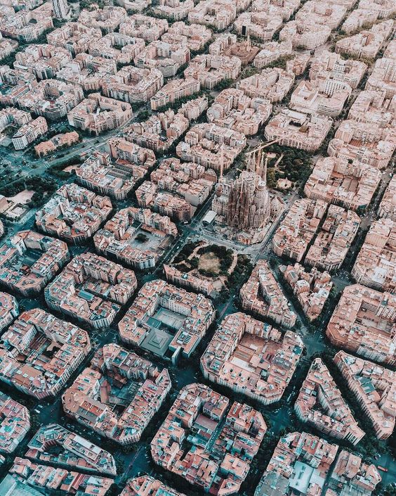
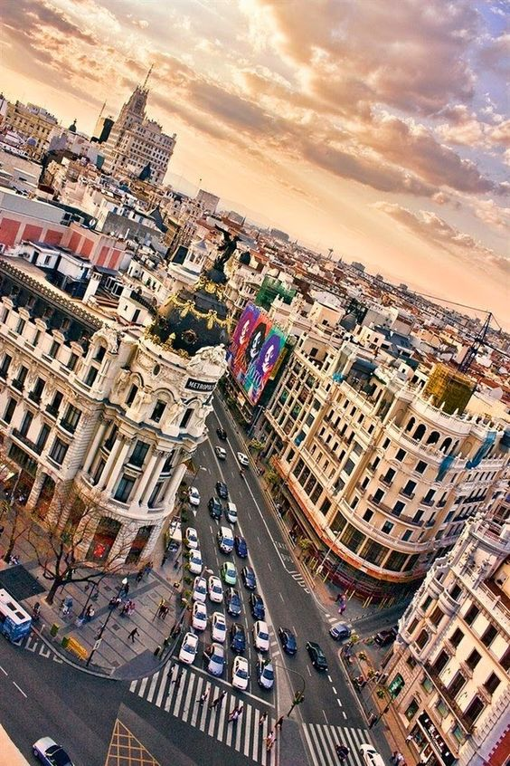
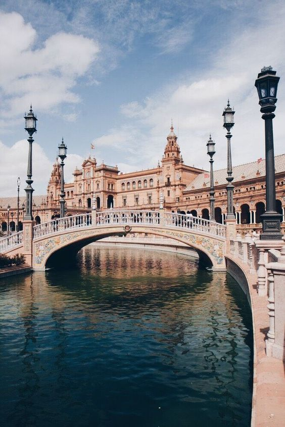

Barselona
Grad koji se nalazi na sjeveroistoku zemlje je glavna turistička destinacija.U Barseloni se mogu vidjeti jedinstvene arhitektonske građevine Sagrada Familia i Casa Batllo. Posjeduje najveći stadijum u Evropi Camp Nou.
Madrid
Prestonica i najveći grad Španije, Madrid. Mješavina je stare i nove arhitekture, a srce grada je Puerta del Sol gdje se održavaju razni festivali. Takođe je poznat i trg Plaza Mayor i San Miguel pijaca.
Sevilja
Dom je mnogih lepih i važnih istorijskih znamenitosti, od kojih je glavna Katedrala za koju se veruje da je tu sahranjen Kolumbo. Takođe je značajan i Alkazar, ekstravagantna mavarska palata sa raskošnim baštama.
Znamenitosti
La Sagrada Familia koju je za sobom ostavio izvanredni arhitekta Antonio Gaudi. Najposećenija je ova nedovršena crkva Svete Familije, sa kulama i vretenasto čudnim oblikom.
Alhambra – Granada - Kitnjasta mavarska palata, Alhambra, jedan je od najposjećenijih spomenika Španije. Kompleks palate, okružen je uređenim vrtovima i snijgom prekrivenim vrhovima Sijera Nevade
Formentera - Španija ima jedne onda najljepših svetskih plaža. Najznačajnije i najlepše među tim netaknutim nalaze se na Balearskom ostrvu Formentera u Mediteranu do koga se stiže posle nekoliko sati provedenih u putovanju broda koji je isplovio sa kopna.
Flamenko i crvena boja
Crvena boja kao simbol strasti, je nešto što savršeno opisuje nacionalni ples Španije – flamenko, a moglo bi se reći i Španiju kao takvu. Crvena boja se može vidjeti svugdje, osim što se nalazi kao dominantna boja na španskoj zastavi, simbolišući njihovu nacionalnu boju, zatim kao motiv arhitekturnog uređenja i dresova reprezentacije u različitim sportovima, strastvena ili bolje reći furiozna crvena boja je i karakterističan element flamenka. Ili barem haljina, koje flamenko plesačice nose i savršeno predstavljaju kroz ples.
Španci su svjesni onoga što ih čini unikatnim i zanimljivim, te vrlo dobro znaju kako da to prodaju svojim posjetiocima. Zato očekujte prilike da posjetite španske večeri i flamenko plesne tačke koje se specijalno organizuju za sve turiste, kako u pozorištima i kabareima, tako i u okviru restorantskih događaja.
Vina
Španija je poznata kao domovina vina. Otprilike rame uz rame sa Italijom i Francuskom, čija vina se smatraju nekim od najkvalitetnijih vrsta na svijetu. Kao što Sicilija posjeduje svoje prepoznatljivo vino Marsala, tako i Španija ima mnoštvo različitih vrsta vina koje se različito proizvode i stvaraju širom Španije. Od južnijih vrelih krajeva pa sve sjevernijih predjela zemlje na zapadu i istoku, a između ostalog i do Kosta Brave. Posebno je poznata vrsta slatkastog vina Šeri, koje posjeduje najrazličitije vrste i brendove poput: Fino, Oloroso, Manzanilla, Amontillado i mnoge druge.
Koliko su španska vina poznata, govori i istorijska činjenica koja govori da je još za vrijeme Rimljana i Rimskog carstva, kvalitet španskog vina bio prepoznat te korišćen širom Rimskog carstva i Mediterana.